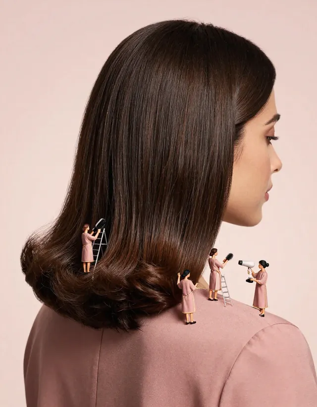

- QAMAR
- Services & areas
- A walk-in blow-dry near Al Quoz
A walk-in blow-dry near Al Quoz
Al Quoz runs alongside Sheikh Zayed Road: galleries and studios, warehouses turned into offices, and many people who finish work and go straight out. QAMAR opens off Sheikh Zayed Road, a short drive from Al Quoz.

After a long day in Al Quoz
Shoots, site visits, gallery set-ups: Al Quoz days are often long and warm. A private shower while your outfit is steamed and perfumed, then a blow-dry, turns a work day into an evening look. Every look on the menu takes 45 minutes or less.
Getting there
- Al Quoz connects to Sheikh Zayed Road through several interchanges, so from most of the area you reach the main road in a few minutes.
- If you can, avoid weekday evenings between 5 and 8 PM, when traffic towards Downtown and DIFC is at its heaviest.
- Al Khail Road, which also crosses Al Quoz, is a useful alternative when Sheikh Zayed Road is jammed.
Before a gallery evening
Gallery evenings in Al Quoz often start right after work. Come at lunchtime or mid-afternoon for a calmer queue, or choose SOS 15 if you only have a few minutes: a fringe, a sleek ponytail or a quick braid.
| Look | Service | Time | Indicative price |
|---|---|---|---|
| Qamar Express | Express Blow-Dry | 35 min | 139 AED |
| SOS 15 | Fringe, sleek ponytail or quick braid | 15 min | 69 AED |
| Midnight Sleek | Sleek Straight | 40 min | 169 AED |
QAMAR opens in March 2027. The exact address will be announced before opening.
Prices are indicative, in AED, and will be confirmed before opening.
Good to know
- Opening March 2027, off Sheikh Zayed Road (between Mall of the Emirates and DIFC). Exact address announced before opening.
- Women only, all-female team, Arabic and English.
- Walk-in only: no appointment, every look in 45 minutes or less.
- Planned hours: 8 AM to midnight (to be confirmed).
- Prices are indicative, in AED, and confirmed before opening.
Frequently asked questions
Is QAMAR in Al Quoz?
No. QAMAR opens off Sheikh Zayed Road, between Mall of the Emirates and DIFC, a short drive from Al Quoz. The address will be announced before opening.
Can I come in work clothes and change?
Yes. Bring your outfit: it is steamed and perfumed while you take a private shower.
How long will the stop take?
Every look takes 45 minutes or less. The steaming happens while you shower, so the ritual adds little time.